Справочник по системному программированию · модуль 2 · лабораторная работа
ЛР 6
Кто загружает
процессор
Монитор пишет у программы «100%» или «25%». Это доля времени, когда ядро процессора было занято этой программой. В работе вы займёте ядра пустым циклом и посчитаете это число сами.
- Пара
- 6, первая половина; перед главой 2.3
- Время
- 30–35 минут
- Программы
- Диспетчер задач, Монитор ресурсов, командная строкаМониторинг системы, Терминал
top, Системный монитор, терминал, Python - Сдать
report.mdи 4 снимка вscreenshots/в папкеlabs/06-cpu-loadрепозиторияsysprog-start
Суть за две минуты
В классе четыре компьютера и двадцать студентов. За каждым компьютером в любой момент сидит один человек. Так же в процессоре: ядер несколько, программ сотни, и каждое ядро делает одно дело за раз.
Дежурный в классе сажает студентов за компьютеры по очереди, на короткое время. В компьютере это делает планировщик. Сколько секунд программа просидела за ядром — её процессорное время.
Программа с бесконечным циклом сама не уходит. Планировщик снимает её силой.
Если за 90 минут пары студент просидел за компьютером 45, он занимал его наполовину. Монитор считает так же: берёт время за ядром дважды и делит прирост на паузу.
Сколько работы сделано, процент не говорит: занятое ядро может быть медленным.
В работе:одно занятое ядро → графики по ядрам → вторая программа → две программы на одном ядре → два замера времени → остановка.
§1Подготовка
Все программы для работы уже есть в системе. Диспетчер задач и Монитор ресурсов входят в Windows.Мониторинг системы лежит в папке «Программы → Утилиты», ps и taskpolicy входят в macOS.top, ps и taskset входят в Ubuntu. Системный монитор открывается командой gnome-system-monitor. Нужен только Python из прошлых работ. Ядро займёт программа из одной строки: while True: pass. Это пустой цикл, который никогда не кончается и ни на что не ждёт. Создайте в репозитории sysprog-start папку labs/06-cpu-load: в шаблоне в ней уже лежат бланк report.md и папка screenshots/.
Пустой цикл занимает ядро целиком, ноутбук от него греется и шумит. Шаг 6 останавливает все такие программы. Если работа прервалась раньше, выполните его сразу.
Вверху шага — действие. Ниже — кадр экрана после действия; красные рамки отмечают места, о которых идёт речь. Под действием — «Зачем этот шаг». Под каждым кадром — «Что на кадре»: что это за окно и что в каждой рамке. Ниже — «Что это значит»: вывод шага. Строка «В отчёт» — что записать в report.md. Номера программ, проценты и число ядер у вас будут другими.
§2Процессорное время и загрузка
В процессоре есть несколько ядер. Ядро — как компьютер в классе: за раз оно делает одно дело. В мониторах Windows ядра называются процессорами.
Программ сотни, а ядер единицы, поэтому программы ждут в очереди. Очередью управляет планировщик — это дежурный из «Сути». Он сажает программу за ядро на несколько миллисекунд, потом снимает и сажает другую. Программа с бесконечным циклом сама не уходит, и планировщик снимает её силой.
Как две программы делят одно ядро
| ядро | 0 мс | 10 | 20 | 30 |
|---|---|---|---|---|
| 0 | A | B | A | B |
| 1 | — | — | — | — |
Строки — ядра 0 и 1, столбцы — начало отрезка в миллисекундах, прочерк — ядро свободно. Длина отрезков условная: настоящую задаёт планировщик. Программа A сидит за ядром, потом B, потом снова A. За 40 мс каждая просидела за ядром 20 мс — половину. Ядро 1 простаивает: этим программам его не дали.
Время, которое программа просидела за ядром, называют процессорным временем. Оно растёт, пока программа за ядром, и стоит, пока она в очереди. Загрузка — доля времени, когда ядро было занято программой.
Монитор считает загрузку так: берёт процессорное время дважды и делит прирост на паузу между замерами.
Загрузка — прирост времени за ядром за паузу
первый замер
время за ядром 85,02 ссколько программа уже просидела за ядромвторой замер
время за ядром 87,48 сприбавилось 2,46 сзагрузка
2,46 / 5 ≈ 49%половина одного ядраЧисла — из шага 5 этой работы в Windows. Время за ядром — счётчик за всю жизнь программы. Загрузку дают два замера и разница между ними.
Шкалы у мониторов разные. Одна программа не займёт больше одного ядра, но проценты пишут по-разному. Проценты из разных мониторов сравнивайте, только пересчитав на одну шкалу.
Сколько процентов показывает монитор
Windows: 100% — все ядра
macOS и Linux: 100% — одно ядро
Одна программа не займёт больше одного ядра. В Диспетчере задач это четверть шкалы, в top и Мониторинге системы — 100%.
§3Ход работы
-
Займите одно ядроЗапустите программу, которая крутит пустой цикл без конца. В командной строке выполните
start /b python -c "while True: pass". Она запустится в фоне, и командная строка останется свободной. Откройте Диспетчер задач: Ctrl+Shift+Esc. На вкладке «Процессы» щёлкните по заголовку «ЦП»: самые занятые программы встанут выше. Найдите строку Python.Займите одно ядроЗапустите программу, которая крутит пустой цикл без конца. В Терминале выполнитеpython3 -c "while True: pass" &. Знак&отправляет её в фон, и Терминал остаётся свободным. Откройте Мониторинг системы, вкладку «ЦП». В поиске справа вверху введитеpython.Займите одно ядроЗапустите программу, которая крутит пустой цикл без конца. В терминале выполнитеpython3 -c "while True: pass" &. Знак&отправляет её в фон. Затем выполнитеtop -d 2: это список программ, самые занятые сверху. Он обновляется раз в 2 секунды.Зачем этот шагНачнём с одной программы, которая занимает ядро без остановки. Смотрим, сколько процентов монитор покажет за одно занятое ядро.
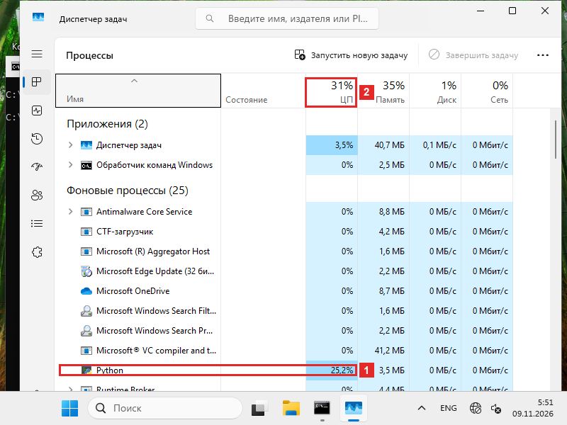
Что на кадреДиспетчер задач, вкладка «Процессы». Таблица отсортирована по столбцу «ЦП».
- 1Строка Python, столбец «ЦП» — 25,2%. Это наша программа: она занимает одно ядро из четырёх.
- 2Заголовок столбца «ЦП» — 31%. Это занятость всех ядер вместе: наша программа и немного других дел.
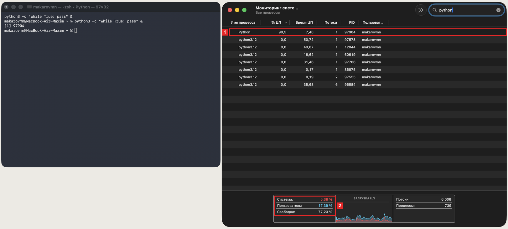
Что на кадреСлева Терминал: программа запущена, её номер 97904. Справа Мониторинг системы, вкладка «ЦП».
- 1Строка Python, номер 97904. Столбец «% ЦП» — 98,5: программа занимает почти целое ядро. «Время ЦП» — 7,40 секунды: столько она просидела за ядром.
- 2Внизу — вся система. «Пользователь» — 17,39%, «Свободно» — 77,23%. Компьютер в целом свободен на три четверти.
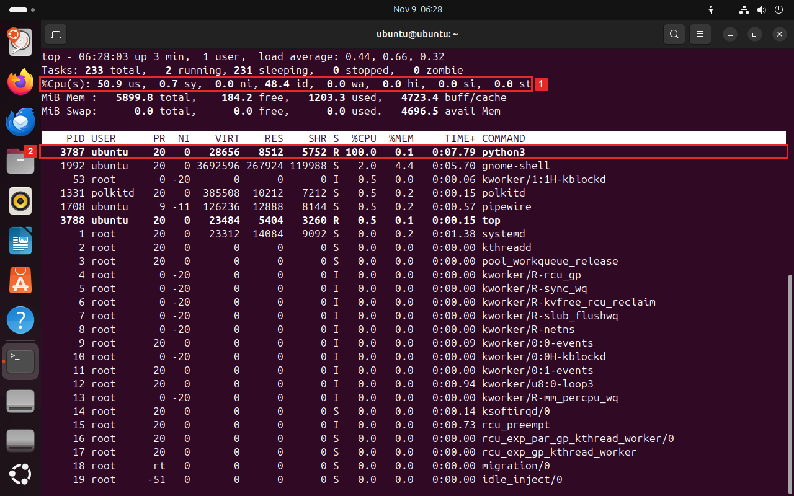
Что на кадреТерминал, программа
top. Вверху — сводка по всему компьютеру, ниже — программы, самые занятые сверху.- 1Строка
%Cpu(s)— занятость всех ядер вместе.us— 50,9%: ядра заняты программами.id— 48,4%: ядра простаивают. - 2Программа
python3, номер 3787. Столбец%CPU— 100,0: целое ядро. СтолбецTIME+— 0:07.79: 7,79 секунды за ядром.
Что это значитМонитор делит проценты на все ядра. Ядер четыре, поэтому одно занятое — четверть, 25%. Остальные 6% — другие мелкие дела компьютера.
Что это значитВ столбце программы 100% — целое ядро. Внизу проценты делятся на все 10 ядер, поэтому одно занятое ядро даёт около 10%. Время за ядром — сколько секунд цикл уже работает.
Что это значитВ столбце программы 100% — целое ядро. Сводка считает по всем ядрам. В ВМ их два, поэтому одно занятое ядро — половина, 50,9%.
В отчёт. сколько процентов у программы в мониторе, сколько у всей системы и сколько ядер у компьютера.
Снимок в отчёт · 01 Сохраните окно как
screenshots/01_one_load.png. На снимке должно быть видно: процесс Python в мониторе: его процент и общая загрузка. -
Посмотрите графики по ядрамНажмите Win+R, введите
resmonи нажмите Enter: откроется Монитор ресурсов. Перейдите на вкладку «ЦП». Справа — график каждого ядра. Если их не видно, разверните окно. Программа из шага 1 всё ещё работает.Посмотрите графики по ядрамВ Мониторинге системы нажмите ⌘+3: откроется окно «История ЦП» с графиком каждого ядра. Программа из шага 1 всё ещё работает. Подождите полминуты, пока графики наберут историю.Посмотрите графики по ядрамВыйдите изtopклавишей Q. Выполнитеgnome-system-monitor &: откроется Системный монитор. Перейдите на вкладку Resources (Alt+2). Программа из шага 1 всё ещё работает. Подождите полминуты, пока график наберёт историю.Зачем этот шагПроцент в таблице — одно общее число. Смотрим по ядрам: сидит программа на одном ядре или её пересаживают?
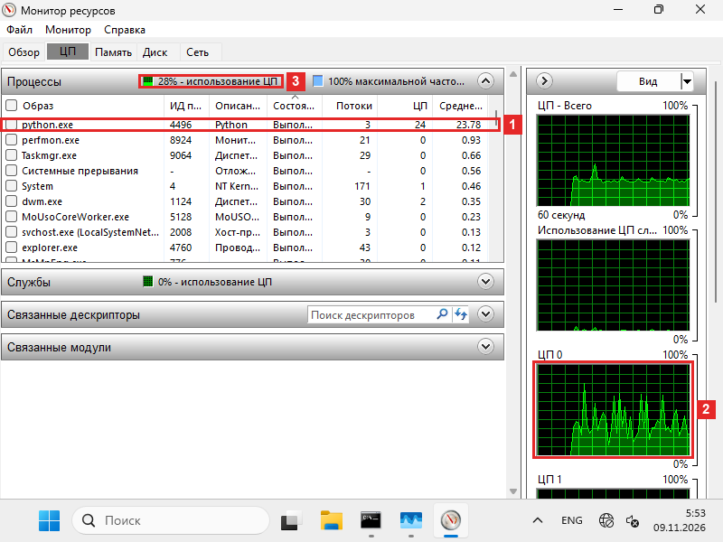
Что на кадреМонитор ресурсов, вкладка «ЦП». Слева таблица, справа графики: общий и по одному на каждое ядро.
- 1Строка
python.exe, номер 4496. В столбцах «ЦП» — 24 и «Среднее» — 23,78: столько она занимает сейчас и в среднем. - 2График «ЦП 0» — первое ядро. Он рваный, с пиками и провалами.
- 3Над таблицей — занятость всех ядер вместе: 28%.
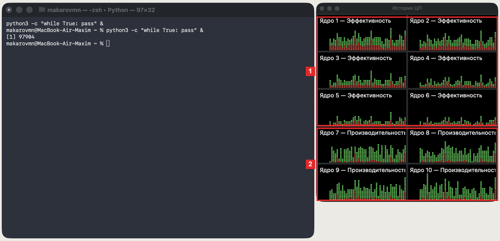
Что на кадреСлева Терминал с запущенной программой (номер 97904). Справа «История ЦП»: один график на каждое ядро.
- 1Ядра 1–6 подписаны «Эффективность»: это экономные ядра для фоновой работы. Их графики заполнены слабее.
- 2Ядра 7–10 подписаны «Производительность»: это быстрые ядра. Их графики заполнены плотнее, но ни один не стоит на 100%.
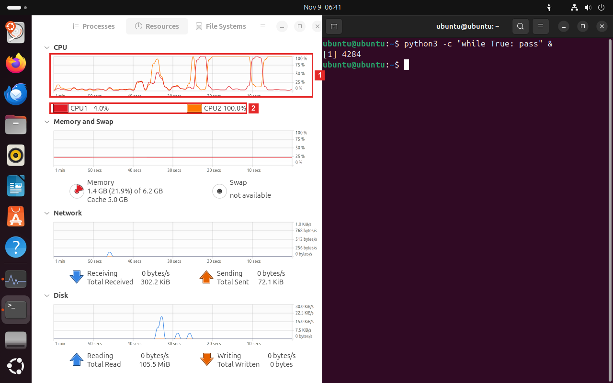
Что на кадреСлева Системный монитор, вкладка Resources, раздел CPU. Справа терминал. Каждая линия на графике — одно ядро.
- 1График за последнюю минуту. Красная линия CPU1 и оранжевая CPU2 по очереди поднимаются к 100% и падают.
- 2Подписи под графиком: сейчас CPU1 занято на 4,0%, CPU2 — на 100,0%.
Что это значитЕсли бы программа сидела на одном ядре, его график был бы ровной полосой у 100%. Такой полосы нет: Windows пересаживает программу с ядра на ядро. На каждом графике виден кусок её работы. Вместе это одно ядро, 25% шкалы.
Что это значитУ этого Mac ядра двух видов: экономные и быстрые. Программу отдали быстрым и всё время пересаживают между ними. Поэтому ни один график не стоит на 100%. Ядро выбирает сам macOS.
Что это значитПрограмма работает всё время, но ядро под ней меняется: её пересаживают на другое. Поэтому линии меняются местами. Вместе они дают около 100% — одно ядро.
В отчёт. на каких ядрах видна нагрузка и сидит ли программа на одном месте.
- 1Строка
-
Запустите вторую программуВыполните
start /b python -c "while True: pass"ещё раз. В Диспетчере задач откройте вкладку «Производительность» и выберите «ЦП».Запустите вторую программуВ Терминале выполнитеpython3 -c "while True: pass" &ещё раз. Вернитесь в главное окно Мониторинга системы и подождите несколько секунд.Запустите вторую программуЗакройте Системный монитор. В терминале выполнитеpython3 -c "while True: pass" &ещё раз, затемtop -d 2и нажмите 1. Вместо одной общей строки вверху появится строка на каждое ядро.Зачем этот шагПока ядер хватает, программы друг другу не мешают. Проверяем: занятость должна вырасти вдвое.
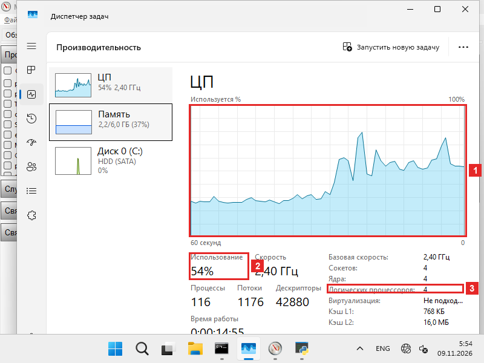
Что на кадреДиспетчер задач, вкладка «Производительность», выбран пункт «ЦП». Позади виден Монитор ресурсов.
- 1График «Используется %» за 60 секунд. Справа он идёт ступенькой: примерно с 27% до 54%.
- 2Поле «Использование» — 54%: занятость всех ядер вместе.
- 3Строка «Логических процессоров» — 4: так Windows считает ядра. Их четыре, поэтому два занятых — половина.
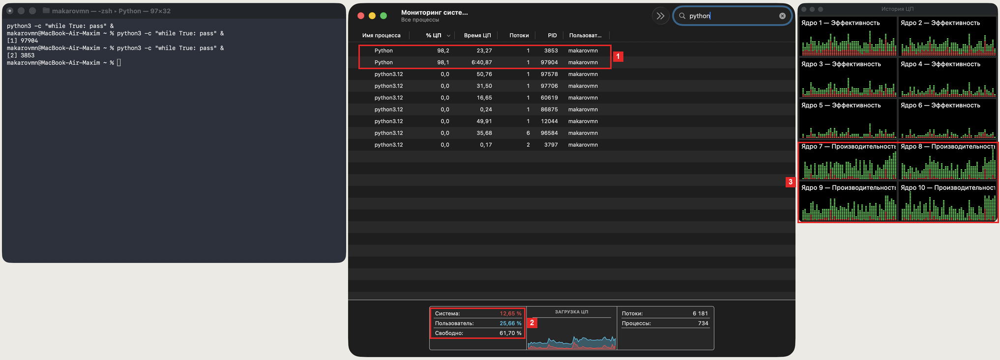
Что на кадреСлева Терминал: запущены две программы, вторая получила номер 3853. В центре Мониторинг системы, справа «История ЦП».
- 1Две строки Python: 3853 и 97904. В столбце «% ЦП» у обеих около 98 (98,2 и 98,1). «Время ЦП» у старой программы — 6:40,87, у новой — 23,27.
- 2Вся система: «Пользователь» — 25,66%, в шаге 1 было 17,39%. «Свободно» — 61,70%.
- 3Графики быстрых ядер 7–10 стали плотнее, чем в шаге 2.
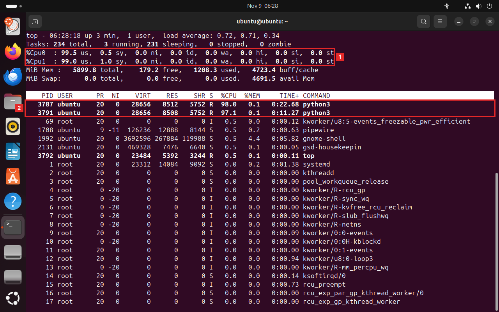
Что на кадреtopсо строкой на каждое ядро, после клавиши 1.- 1Строки
%Cpu0и%Cpu1:us— 99,5% и 99,0%, простоя (id) нет. Оба ядра заняты. - 2Две программы
python3, номера 3787 и 3791. В столбце%CPUу них 98,0 и 97,1.
Что это значитКаждая программа заняла своё ядро из четырёх. Вместе — половина. Ядер хватает обеим, поэтому они друг другу не мешают.
Что это значитКаждой программе досталось своё ядро, поэтому у обеих почти по 100%. Занятость системы выросла примерно на одно ядро из десяти. Время за ядром копится всю жизнь программы, поэтому у старой оно уже в минутах.
Что это значитВ ВМ два ядра, и две программы заняли оба. У каждой почти по 100%. Третьей программе ядра бы не хватило: они сидели бы за ядрами по очереди.
В отчёт. проценты обеих программ и занятость всей системы.
Снимок в отчёт · 02 Сохраните окно как
screenshots/02_two_loads.png. На снимке должно быть видно: два процесса Python и загрузка ядер. -
Посадите обе программы на одно ядроОстановите программы:
taskkill /im python.exe /f. Запустите две новые и разрешите им только ядро 0. Для этого дважды выполнитеstart /b /affinity 1 python -c "while True: pass". Число 1 после/affinityзначит «только ядро 0». Перейдите в Монитор ресурсов.Отправьте программу на медленные ядраОстановите программы:kill %1 %2. Привязать программу к ядру macOS не даёт, но можно пометить её как фоновую. Выполнитеtaskpolicy -b python3 -c "while True: pass" &и найдите её строку в Мониторинге. Затем остановите её:kill %1. Теперь сравним, сколько оборотов цикл делает за 3 секунды. Запишите программу-счётчик в переменную:P='import time t = time.time() + 3; n = 0 while time.time() < t: n += 1 print(f"{n:,}")'Выполнитеpython3 -c "$P", затемtaskpolicy -b python3 -c "$P".Посадите обе программы на одно ядроВыйдите изtopклавишей Q и остановите программы:kill %1 %2. Дважды выполнитеtaskset -c 0 python3 -c "while True: pass" &. Частьtaskset -c 0разрешает программе только ядро 0. Снова выполнитеtop -d 2и нажмите 1.Зачем этот шагПроцент зависит от того, на каких ядрах программе разрешено сидеть. Ограничиваем выбор и смотрим, что изменится.
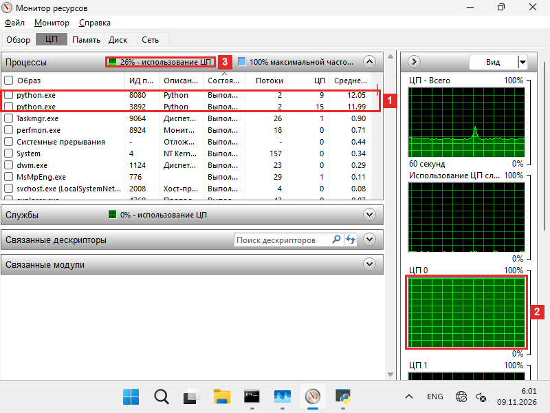
Что на кадреМонитор ресурсов, вкладка «ЦП». Запущены две новые программы, посаженные на ядро 0.
- 1Два
python.exe, номера 8080 и 3892. В столбце «Среднее» у них 12,05 и 11,99: каждая занимает около половины ядра. - 2График «ЦП 0» — сплошная полоса на 100%: ядро 0 занято полностью.
- 3Занятость всех ядер вместе — 26%. Почти столько же было с одной программой.
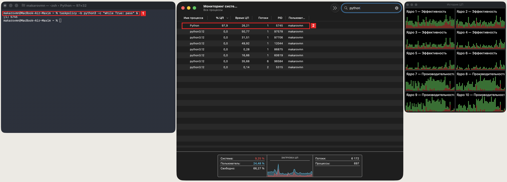
Что на кадреСлева Терминал с программой, запущенной через
taskpolicy -b. В центре Мониторинг системы, справа «История ЦП».- 1Команда с
taskpolicy -b: она запускает программу как фоновую. Номер — 5745. - 2Строка Python, номер 5745: «% ЦП» — 97,9. Монитор показывает почти тот же процент, что и у обычной программы.
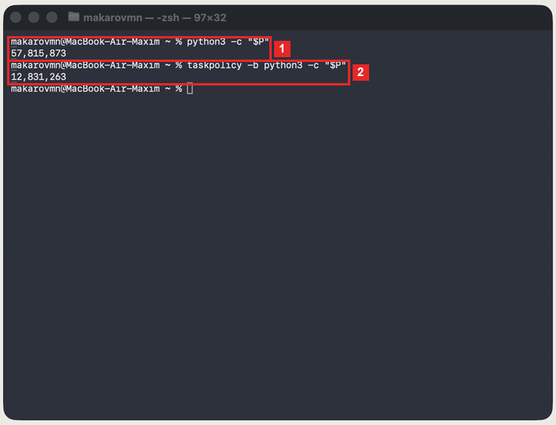
Что на кадреТерминал после двух запусков программы, которая считает обороты цикла за 3 секунды. Число под командой — результат.
- 1Обычный запуск
python3 -c "$P": 57 815 873 оборота за 3 секунды. - 2Запуск с
taskpolicy -b: 12 831 263 оборота за те же 3 секунды.
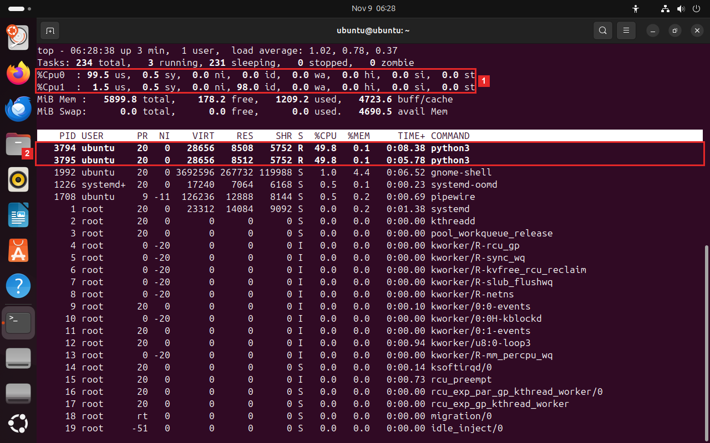
Что на кадреtopсо строкой на каждое ядро. Обе программы запущены сtaskset -c 0: им разрешено только ядро 0.- 1Строка
%Cpu0:us— 99,5%, ядро 0 занято. Строка%Cpu1:id— 98,0%, ядро 1 простаивает. - 2Две программы
python3, номера 3794 и 3795. В столбце%CPUу каждой по 49,8.
Что это значитОбщая занятость такая же, как с одной программой, хотя программ две. Им разрешено одно ядро, и они делят его пополам. Каждой достаётся 12,5% шкалы. Остальные три ядра свободны, но этим программам их не дали.
Что это значитФоновую программу macOS сажает на экономные ядра. Монитор показывает те же 98%: ядро занято ею почти всё время. Но экономное ядро медленнее. За 3 секунды оно делает в 4,5 раза меньше работы.
Что это значитПрограмм две, а ядро разрешено одно. Они сидят за ним по очереди, и каждой достаётся половина. Второе ядро свободно, но им его не дали. Программе не хватает ядра, хотя половина компьютера простаивает.
В отчёт. проценты обеих программ и занятость каждого ядра (в macOS — проценты и два числа оборотов).
Снимок в отчёт · 03 Сохраните окно как
screenshots/03_one_core.png. На снимке должно быть видно: две нагрузки на одном ядре и их проценты; в macOS — два числа оборотов цикла. - 1Два
-
Измерьте время за ядромВыполните
powershell -c "Get-Process python | Format-Table Id,CPU; Start-Sleep 5; Get-Process python | Format-Table Id,CPU"
Команда дважды выводит список программpython, между выводами пауза 5 секунд. СтолбецCPU— сколько секунд программа просидела за ядром.Измерьте время за ядромЗапустите программу:python3 -c "while True: pass" &. Выполнитеps -o pid,time,%cpu,comm -p $!. Здесь$!— номер последней фоновой программы,time— секунды за ядром. Подождите 5 секунд и выполните команду ещё раз.Измерьте время за ядромВыйдите изtopклавишей Q. Выполнитеps -o pid,psr,time,%cpu,comm -C python3. Команда берёт программы по имениpython3и показывает номер ядра (psr) и время за ядром (time). Подождите 5 секунд и выполните команду ещё раз.Зачем этот шагПроценты монитор считает сам. Посчитаем и мы: возьмём время за ядром дважды и вычтем одно из другого.
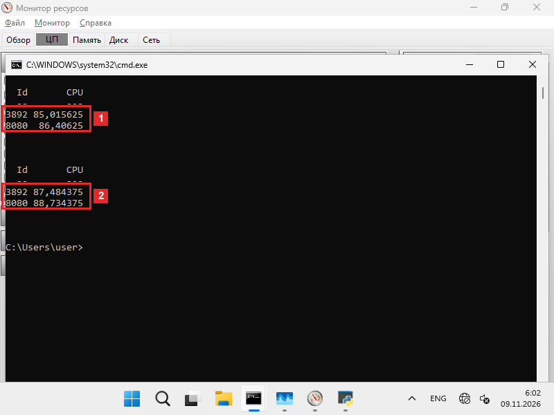
Что на кадреКомандная строка. Таблица выведена дважды, между выводами пауза 5 секунд. Столбец
Id— номер программы,CPU— секунды за ядром.- 1Первый замер: программа 3892 — 85,015625 секунды, программа 8080 — 86,40625.
- 2Второй замер через 5 секунд: 3892 — 87,484375, 8080 — 88,734375.
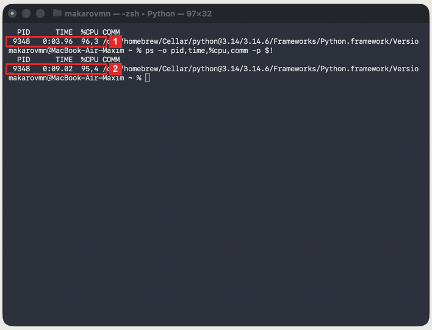
Что на кадреТерминал: команда выполнена дважды с паузой около 5 секунд. Столбец
TIME— время за ядром.- 1Первый замер: программа 9348,
TIME— 0:03.96. - 2Второй замер:
TIME— 0:09.02.
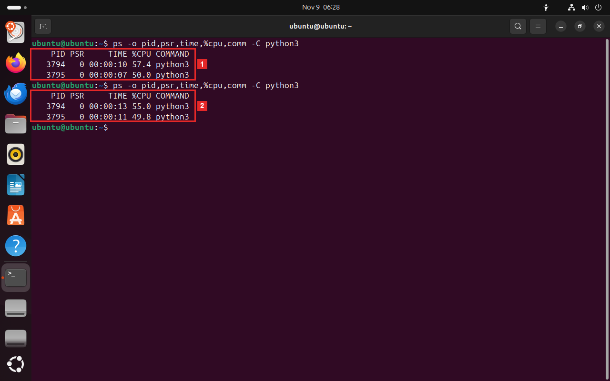
Что на кадреТерминал: команда выполнена дважды с паузой 5 секунд. Столбец
PSR— номер ядра, на котором сидит программа. СтолбецTIME— время за ядром.- 1Первый замер: программа 3794 — 10 секунд, 3795 — 7 секунд. У обеих
PSRравен 0. - 2Второй замер: 3794 — 13 секунд, 3795 — 11 секунд.
Что это значитЗа 5 секунд каждая программа просидела за ядром около 2,4 секунды: 2,46 и 2,33. Это половина ядра. Загрузка считается так: прирост времени делим на паузу.
Что это значитМежду замерами прошло около 5 секунд, а время выросло на 5,06 секунды. Программа сидела за ядром всё это время: загрузка около 100%. Столбец
%CPUуpsчуть ниже: он сглаживает за последние десятки секунд.Что это значитОбе программы всё время на ядре 0, как велел
taskset. Командаpsпоказывает целые секунды, поэтому прирост грубый: 3 и 4 секунды. Для точного счёта нужны доли секунды. В главе 2.3 наш агент будет читать время в микросекундах.В отчёт. время за ядром в двух замерах, паузу между ними и загрузку, которая из них получается.
Снимок в отчёт · 04 Сохраните окно как
screenshots/04_cpu_time.png. На снимке должно быть видно: два замера процессорного времени с паузой между ними. -
Остановите программыВыполните
taskkill /im python.exe /f: команда завершает все программы с именемpython.exe. Через 10 секунд посмотрите на Монитор ресурсов.Остановите программуВыполнитеkill %1:%1— первая фоновая задача этого Терминала. Через 10 секунд посмотрите на «Историю ЦП».Остановите программыОткройте Системный монитор, вкладку Resources. В терминале выполнитеpkill -f "while True": команда завершает все программы, в запуске которых есть эти слова. Через 10 секунд посмотрите на график.Зачем этот шагУбираем за собой: пустые циклы греют ноутбук. Заодно видно, как ядра освобождаются.
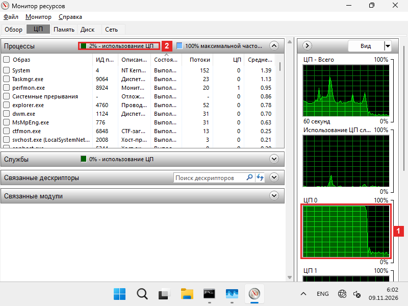
Что на кадреМонитор ресурсов, вкладка «ЦП», через 10 секунд после остановки. Программ
python.exeв таблице больше нет.- 1График «ЦП 0»: сплошная полоса на 100% обрывается и падает почти к нулю.
- 2Занятость всех ядер вместе — 2%.
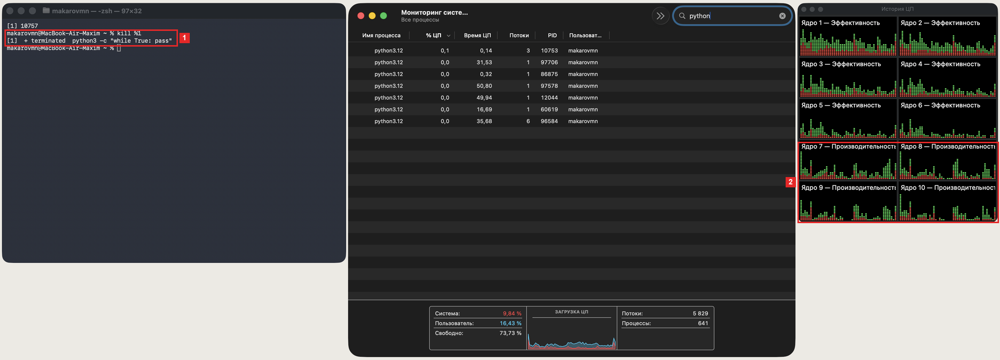
Что на кадреСлева Терминал после команды
kill %1. В центре Мониторинг системы, справа «История ЦП».- 1Строка
terminatedв Терминале: программа завершена. В Мониторинге строки Python с нагрузкой больше нет. - 2Графики быстрых ядер 7–10 справа опускаются. Слева виден прежний подъём: график хранит последнюю минуту.
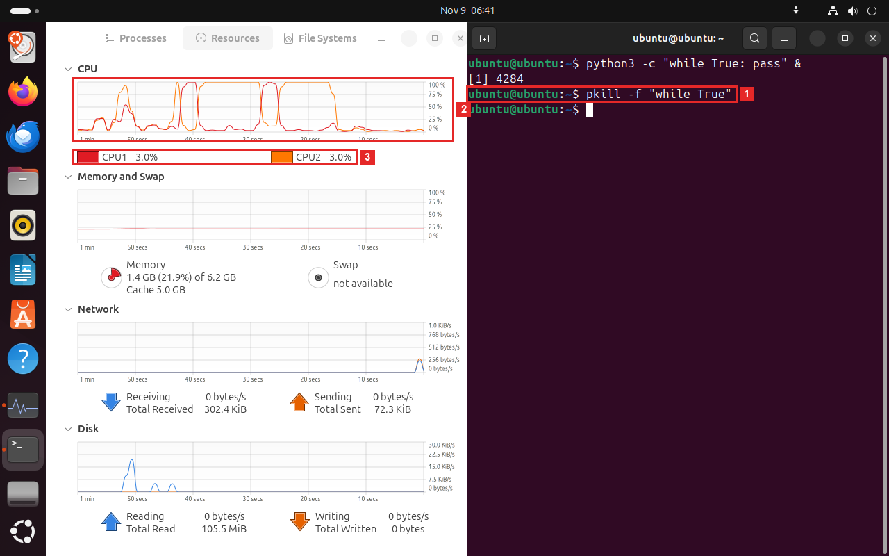
Что на кадреСлева Системный монитор, вкладка Resources, раздел CPU. Справа терминал после команды
pkill.- 1Команда
pkill -f "while True"завершает программы, в запуске которых есть эти слова. - 2График CPU: обе линии падают со 100% почти к нулю.
- 3Подписи под графиком: CPU1 и CPU2 по 3,0%.
Что это значитПрограмм больше нет, ядро 0 свободно. Время за ядром у завершённой программы больше не растёт.
Что это значитЯдра вернулись к мелкой работе других программ. График хранит минуту назад, поэтому прежняя нагрузка слева ещё видна.
Что это значитПрограммы завершены, ядра почти свободны. Остальные 3% — сам Системный монитор и рабочий стол.
§4Что получилось
| Windows | macOS | Linux | |
|---|---|---|---|
| Одна программа в мониторе | 25% — четверть шкалы при 4 ядрах | 98,5% — одно ядро | 100% — одно ядро |
| Где сидит программа | планировщик пересаживает её с ядра на ядро; в macOS — между быстрыми ядрами | ||
| Ограничить ядра | start /affinity 1 — только ядро 0 | привязки нет; taskpolicy -b — фоновая работа на экономных ядрах | taskset -c 0 — список ядер |
| Две программы на одном ядре | по 12,5% шкалы | — | по 49,8% |
| Время за ядром | Get-Process, столбец CPU, секунды с долями | ps -o time, секунды с долями | ps -o time, целые секунды; в top — TIME+ |
- Все проценты в мониторе берутся из одного счётчика: сколько секунд программа просидела за ядром.
- Загрузка — прирост этого времени за паузу, делённый на паузу.
- Процент не говорит, сколько работы сделано: в macOS на экономном ядре те же 98% дали в 4,5 раза меньше оборотов цикла.
- В главе 2.3 агент сделает те же два замера: его часть на C прочитает время, часть на Python посчитает загрузку и найдёт программу, которая заняла процессор больше чем на 80%.
§5Отчёт
Бланк — в labs/06-cpu-load/report.md. Замените каждый пропуск ___ данными со своего экрана, снимки положите в screenshots/. Коммит — labs 06: кто загружает процессор, отчёт.
# ЛР 6. Кто загружает процессор Система: ___ Ядер (логических процессоров): ___ ## Одна нагрузка Процент процесса в мониторе: ___ Общая загрузка: ___ На каких ядрах видна нагрузка: ___ ## Две нагрузки Проценты обеих нагрузок и общая загрузка: ___ На одном ядре (в macOS — фоновый режим): ___ ## Процессорное время Первый замер, второй замер, пауза: ___ Загрузка по замерам: ___ Почему процент в мониторе не говорит о скорости работы: ___ Не получилось: ___ ## Снимки экрана    
Кроме чисел в отчёт кладутся 4 снимков экрана. В папке labs/06-cpu-load/screenshots уже лежат заглушки с нужными именами, а в report.md — ссылки на них с подписями. Сделайте снимок окна после шага из таблицы и сохраните его поверх заглушки с тем же именем: подпись и ссылку менять не нужно, на GitHub отчёт сразу покажет ваш снимок. В каждом шаге такой снимок отмечен оранжевой строкой «Снимок в отчёт».
Как снять окно: Win+Shift+S → «Окно», затем сохранить из «Ножниц» как PNG⌘+⇧+4, затем Пробел и щелчок по окну — PNG появится на Рабочем столеPrtSc → «Окно», PNG сохраняется в папку «Изображения/Снимки экрана». Снимок — всё окно программы, без обрезки; имя файла — строго из таблицы.
| № | После шага | Файл | Что должно быть видно |
|---|---|---|---|
| 01 | 1 | 01_one_load.png | процесс Python в мониторе: его процент и общая загрузка |
| 02 | 3 | 02_two_loads.png | два процесса Python и загрузка ядер |
| 03 | 4 | 03_one_core.png | две нагрузки на одном ядре и их проценты; в macOS — два числа оборотов цикла |
| 04 | 5 | 04_cpu_time.png | два замера процессорного времени с паузой между ними |
§6Проверьте себя
Пять вопросов с ответами
Почему одна программа с бесконечным циклом в Диспетчере задач даёт 25%, а в top — 100%?
Цикл занимает одно ядро целиком. top и Мониторинг системы считают 100% за одно ядро, а Диспетчер задач — за все ядра. При 4 ядрах одно ядро — четверть шкалы.
Что такое процессорное время программы?
Сколько секунд программа просидела за ядром за всю свою жизнь. Пока она ждёт в очереди, время стоит.
Как по процессорному времени посчитать загрузку?
Замерить время дважды и разделить прирост на паузу между замерами. 2,46 секунды за 5 секунд — около 49% одного ядра.
Почему две программы на одном ядре получают по 50%, хотя второе ядро свободно?
Им разрешено только одно ядро. Планировщик сажает их за него по очереди, а на свободное ядро не переносит.
Почему одинаковые 98% могут означать разную скорость работы?
Процент — доля времени, когда ядро занято программой. Ядра бывают быстрые и медленные. В macOS фоновая программа на экономном ядре занята так же полно, но за то же время делает в несколько раз меньше работы.